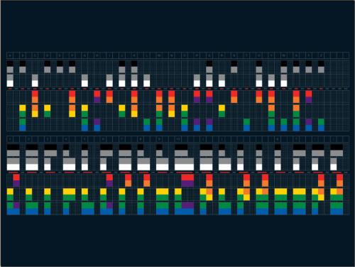
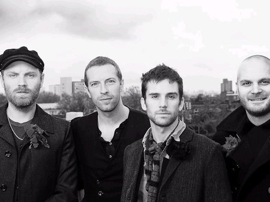

X&Y: Explorando en Tercer Álbum de la banda británica
Durante el año 2004 la banda decidió alejarse del centro de atención. Según Chris Martin, si se alejaban durante ese año la gente no se cansaría de ellos, además de que tendrían tiempo de sobra para crear "lo mejor que nadie haya escuchado jamás". Antes de aquellas declaraciones, el guitarrista Jonny Buckland y el productor Ken Nelson ya habían grabado algunas demos en Chicago durante el otoño de 2003. Las grabaciones oficiales se iniciaron en enero de 2004.
En principio el álbum iba a estar listo para finales de año. Sin embargo el periodo de grabación se extendió hasta los 18 meses. La causa de este retraso se debe a que la banda no estaba satisfecha del todo con las canciones que creaban junto a Ken Nelson, con quien ya grabaron Parachutes y A Rush of Blood to the Head. En total se grabaron 60 canciones, de las cuales se descartaron 52.
Su búsqueda de la perfección fue tal que, en medio de unos ensayos para una futura gira notaron como tocaban mejor las canciones en vivo que como ya estaban grabadas. Tras esto rehicieron las canciones que se habían salvado. Esta vez decidieron cambiar de productor. Sin embargo salvarían las grabaciones de tres temas grabados con Ken Nelson.
Con Danton Supple a los mandos la banda afrontaba los últimos meses de 2004 con un retraso en la fecha final del álbum. El hecho de posponer la publicación del disco hasta el próximo año fiscal provocó grandes pérdidas a su discográfica. Terminar el disco se les hacía cada vez más duro.
Sin embargo, cuando terminaron de grabar Square One, el ambiente dentro del estudio se hizo más optimista. La banda finalizó los arreglos de las demás canciones durante ese mes. Las últimas semanas ni siquiera escuchaban los temas terminados por temor a que su afán de perfeccionismo les hiciera rehacer el álbum. Aun así, durante los meses de grabación X&Y se regrabó un total de tres veces.
El diseño corre por parte de Tapin Gofton, dúo de artistas formado por Mark Tappin y Simon Gofton. Se trata de una representación gráfica del código de Baudot, una antigua forma de telégrafo que usaba código binario (unos y ceros) para transmitir mensajes. La portada del álbum tiene el escrito X&Y en este código.

Los sencillos del álbum presentan una portada similar. En cada uno de ellos aparece el nombre de la canción escrito en el mismo código.
X&Y fue publicado el 6 de junio de 2005. A pesar de retrasarse casi medio año, el álbum fue un éxito comercial en Europa. La prensa estadounidense calificó el lanzamiento del disco como un logro en la historia de Coldplay. Con todo esto fue el disco más vendido del 2005. Las críticas fueron generalmente positivas, sin embargo, algunos críticos mencionaron que X&Y no superaba a sus dos predecesores. Allmusic comparó a la banda con U2, y si bien admiraba el sonido que Coldplay supo crear, criticó duramente las letras de Chris Martin. Pitchfork Media, posiblemente el medio más duro con la banda, dijo que el álbum no era memorable, aunque admitió que es digno de ser escuchado.
X&Y fue nominado a multitud de premios. Ganó un Premio Brit al mejor álbum británico. En los Premios Juno ganó la categoría de mejor álbum internacional. Coldplay también fue nominado por tercera vez consecutiva a los Premios Mercury. Además de estar nominado a un Grammy al mejor álbum de rock.

Fuente: Play Feel